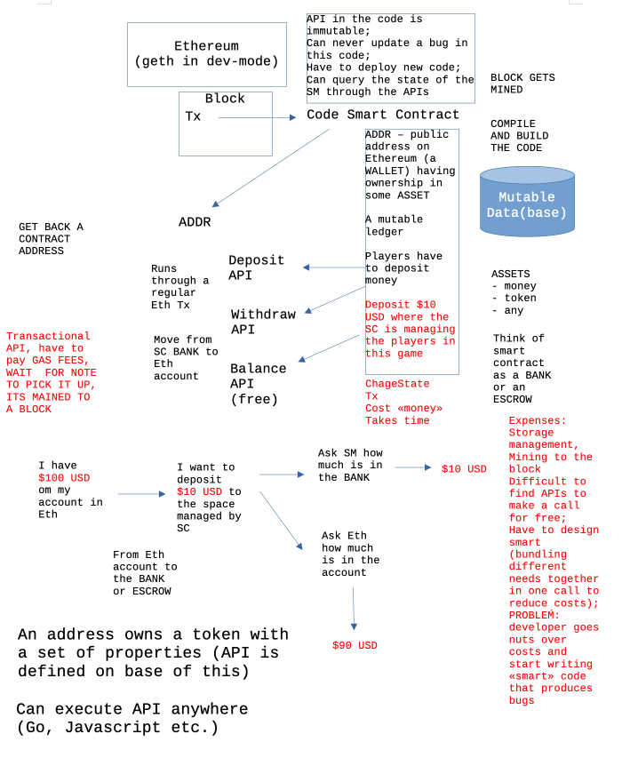

Lecture 4 notes (feedback session)
Feedback notes (Nov 8, 2023)
User profiles
There are some issues to consider when talking about user profiles in connection to blockchains. There are several classifications mentioned in literature. Helliar et al. (2020) mentions one of such classification: The first application of a blockchain was in 2009. This involved the Bitcoin cryptocurrency, and since then two types of blockchains have diffused - permissionless and permissioned ...
- permissionless (common for cryptocurrencies and financial markets)
- permissioned (more common for businesses and institutions? business case in an organizational context needed?) Permissioned blockchains usually involve a consortium of organizations where transactions are blocked together and verified by authorised gatekeepers instead of anonymous miners. (Helliar et al., 2020)
Another classification used separates between public, private (the "private" is often used interchangeably with "permissioned") and hybrid blockchains:
- Public blockchains must have an economic incentive for the nodes to support the blockchain network, therefore a user must always pay a transaction fee whenever they use the public blockchain (Shahaab, Lidgey, Hewage, & Khan, 2019). Bitcoin and Ethereum (Buterin, 2014) are typical examples of public blockchains. (Shahaab et al., 2023)
- Private and consortium blockchains (also broadly known as permissioned blockchains) only allow a selected group to participate in the network and consensus process. Private/consortium blockchains are more suitable for organisations where certain level of trust already exists among the participants and they can rely on a trust model based on the authority of the trusted participant. Since there is a business incentive for organisations to setup a private/consortium blockchain, they do not need to be incentivised in some sort of monetary forms such as transaction fees, to support the blockchain network ... (Shahaab et al., 2023)
- A hybrid blockchain setup can be achieved by using a combination of public and private blockchains. It allows users to set rules on what interactions or transactions are to be made on the permissionless ledger (public blockchain) and where to apply restriction and keep information private on a permissioned ledger (private blockchain). For example, a government agency may want to award a contract on a public blockchain for the sake of transparency but would prefer sharing information with law enforcement regarding an investigation on the private distributed ledger. (Shahaab et al., 2023)
NFTs
NFT concept comes from Ethereum's token standard. This standard specifies how to "mark" each token with unique (to highest possible degree) distinguishable signs (i. e. symbols). NFT is cryptocurrency derived from Smart Contracts on Ethereum (Wang et al., 2021).
To be specific, by using NFTs on smart contracts (in Ethereum (Wood et al., 2014)), a creator can easily prove the existence and ownership of digital assets in the form of videos, images, arts (Franceschet et al., 2020), event tickets (Regner et al., 2019), etc. (Wang et al., 2021)
Something similar is also "Bitcoin ordinals", that is an extension of the Bitcoin blockchain, to store digital artefacts. Ordinals are a way to add non fungible asset capabilities to the Bitcoin blockchain. Although Bitcoin is often opposed to Smart Contract platforms like Ethereum, Bitcoin developers have pushed the boundaries of regular Bitcoin transactions and found ways to allow the creation of a new type of asset that resembles Ethereum-based NFTs but lives on Bitcoin. Proposed in early 2022, the first ordinal has been inscribed on the Bitcoin blockchain on December 14th 2022. (Bertucci, 2023)
Consensus mechanisms
Manolache et al. (2020) write about Proof of Authority (PoA) consensus mechanism.
Delegated Proof Of Stake is described in Hu et al. (2021).
Tools
Still keeping this image in those notes from the previous notes (lec03.html).
Figure 1. Kennedy drawing from video.
Links
Something found during the reading students' proposals and considered as relevant there and then:
- Differences between permissionless and permissioned blockchain https://cointelegraph.com/learn/permissioned-blockchain-vs-permissionless-blockchain-key-differences
- Metrics for intellectual contributions https://www.gram.edu/academics/majors/business/research/docs/AACSB%20Intellectual%20Contributions%20Impact%20Metrics.pdf
- Ransomware Activity and Blockchain Congestion by Konstantin Sokolov https://www.chapman.edu/business/_files/faculty-research/2019-conference-money-finance/konstantin-sokolov-paper.pdf
References
- Bertucci, L. (2023, June 20). Bitcoin Ordinals: Determinants and Impact on Total Transaction Fees. doi: 10.2139/ssrn.4486127
- Buterin, V. (2014). A next-generation smart contract and decentralized application platform Etherum (January) (2014), pp. 1-36, 10.5663/aps.v1i1.10138
- Franceschet, M., & Della Libera, D. (2023). Return on NFTs. Front. Blockchain, 6, 1101939. doi: 10.3389/fbloc.2023.1101939
- Franceschet, M., Colavizza, G., Smith, T., et al.: Crypto art: A decentralized view. Leonardo pp. 1–8 (2020)
- Haber, S., & Stornetta, W. Scott. (1991). How to time-stamp a digital document. Journal of Cryptology, 3(2). https://doi.org/10.1007/bf00196791 (Haber & Stornetta, 1991)
- Helliar, C. V., Crawford, L., Rocca, L., Teodori, C., & Veneziani, M. (2020). Permissionless and permissioned blockchain diffusion. Int. J. Inf. Manage., 54, 102136. doi: 10.1016/j.ijinfomgt.2020.102136
- Hu, Q., Yan, B., Han, Y., & Yu, J. (2021). An Improved Delegated Proof of Stake Consensus Algorithm. Procedia Comput. Sci., 187, 341–346. doi: 10.1016/j.procs.2021.04.109
- Regner, F., Urbach, N., Schweizer, A.: Nfts in practice–non-fungible tokens as core component of a blockchain-based event ticketing application (2019)
- Manolache, M. A., Manolache, S., & Tapus, N. (2022). Decision Making using the Blockchain Proof of Authority Consensus. Procedia Comput. Sci., 199, 580–588. doi: 10.1016/j.procs.2022.01.071
- Polge, J., Robert, J., & Le Traon, Y. (2021). Permissioned blockchain frameworks in the industry: A comparison. ICT Express, 7(2), 229–233. doi: 10.1016/j.icte.2020.09.002 https://www.sciencedirect.com/science/article/pii/S2405959520301909
- Shahaab, A., Lidgey, B., Hewage, C., & Khan, I. (2019). Applicability and Appropriateness of Distributed Ledgers Consensus Protocols in Public and Private Sectors: A Systematic Review. IEEE Access, 7, 43622–43636. doi: 10.1109/ACCESS.2019.2904181
- Shahaab, A., Khan, I. A., Maude, R., Hewage, C., & Wang, Y. (2023). Public service operational efficiency and blockchain – A case study of Companies House, UK. Government Information Quarterly, 40(1), 101759. doi: 10.1016/j.giq.2022.101759
- Wang, Q., Li, R., Wang, Q., & Chen, S. (2021). Non-Fungible Token (NFT): Overview, Evaluation, Opportunities and Challenges. arXiv, 2105.07447. Retrieved from https://arxiv.org/abs/2105.07447v3
- Westphal, E., & Seitz, H. (2021). Digital and Decentralized Management of Patient Data in Healthcare Using Blockchain Implementations. Front. Blockchain, 4, 732112. doi: 10.3389/fbloc.2021.732112
- Wood, G., et al.: Ethereum: A secure decentralised generalised transaction ledger. Ethereum project yellow paper 151(2014), 1–32 (2014)